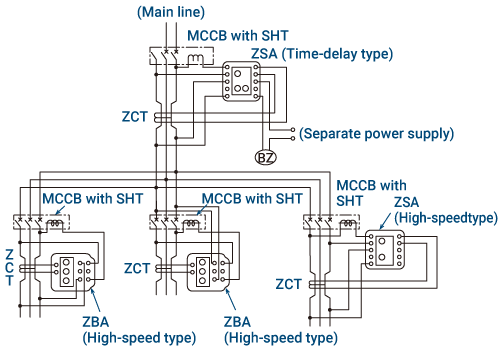
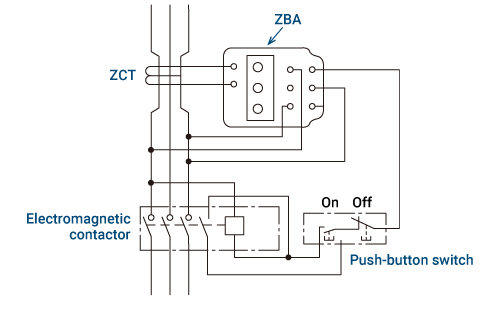
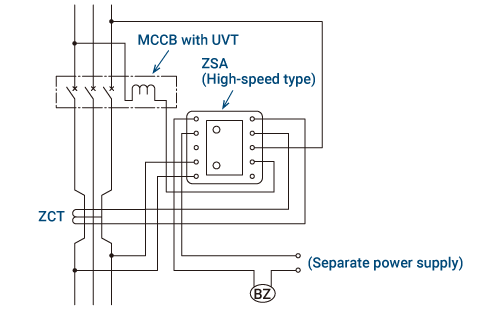
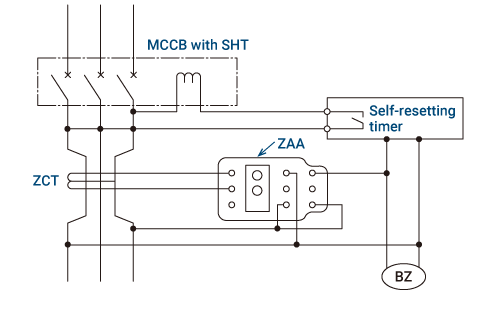
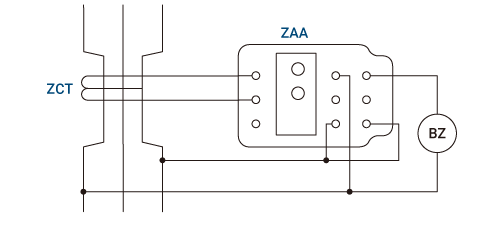

Low-voltage Circuit BreakersEarth Leakage Relays

Interruption by a Molded Case Circuit Breaker

- Ground fault selective coordination can be achieved by installing a time-delay type on the main line and a high-speed type on the branch.
- Time-delay types include the ZBA/ZSA/ZHA/ZLA model.
- Use the ZSA/ZHA/ZLA model if you need 415V, a built-in connection type, and also alarm output.
- The power supply for the earth leakage relay can be made separate.
To reset the system automatically
Use the ZBA/ZHA model, and connect the control power supply to the load side of the MCCB. (No earth leakage indicator)
To indicate earth leakage current
When using the ZBA/ZHA model, connect the control power supply to the line side of the MCCB or to a separate power supply. The MCCB should be turned on again after pressing the reset button.
Interruption with an Electromagnetic Contactor

- Use the ZBA or ZSA/ZHA/ZLA model.
- The figure shows an earth leakage indicator using the ZBA model, but to reset automatically, connect the control power supply to the load side of the electromagnetic contactor.
- Use the ZSA/ZHA/ZLA model if you need 415V, a built-in connection type, and also alarm output.
Interruption When Power Supply Voltage Drops or Ground Fault Occurs

- Use the ZBA or ZSA/ZHA/ZLA model.
Interruption After a Set Time When a Ground Fault Occurs

- Use the ZAA model in combination with a timer.
- When a ground fault is detected, the circuit is interrupted the time set on timer.
- If the ground fault ceases before reaching the time set on timer, the timer will automatically reset itself.
Measuring Leakage Current Using a ZCT

- In combination with measurement and control devices, leakage current values are measured.
Activating Alarm Only During an Earth Leakage Incident

- Use the ZAA model.
- When the ground fault ceases, the system automatically resets, and the alarm stops.